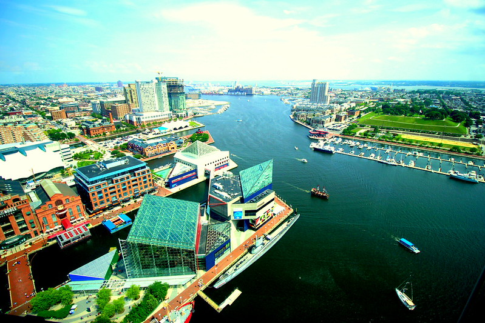

Order and Chaos Coffee Baltimore
Address:1410 Key Hwy, Baltimore, MD 21230
Website:
orderchaoscoffee.com

Order and Chaos Coffee is located inside the ad agency Planit next to the Museum of Industry in Baltimore. The shop is within walking distance to the inner harbor, which offers a waterfront view to enjoy their variety of brews.
Order and Chaos serves brewed drinks such as pour-overs and seasonal lattes, tea and food such as sandwiches, pastries and "walking waffles" to enjoy.
The shop offers dine-in, takeout and delivery in a space designed to be a community hub for socializing and working with views into the creative workspace next door.
| Region | Waterfront View | Walkable to Waterfront |
|---|---|---|
| Central | No | Yes |
3 Things to Try:
- Aeropress coffee
- Tropical Sunshine smoothie
- Caramel Apple Pie waffle
A wonderful community-oriented coffee shop which offers great coffees and drinks along with a focused selection of rather tasty food sandwiches.
-Jennifer Coates
First time visiting this funky coffee stop. Interior is bright and energetic like the coffee. Super friendly staff and plenty of seating inside. Definitely worth checking out.
-Marty Emigh
